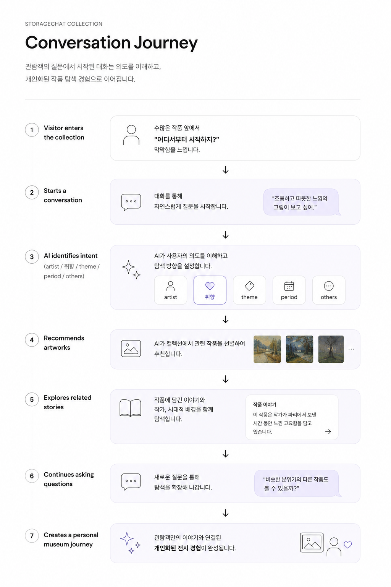

미술관 수장고의 역할이 단순 보존에서 '개방형 수장고'로 확장되면서, 관람객 개개인의 취향에 맞춘 능동적 관람 경험에 대한 수요가 커지고 있습니다. 연구팀은 이런 흐름에 맞춰 국립현대미술관(MMCA)을 위해 멀티모달 생성형 AI 기반 서비스 'Xplore Museum'을 개발했고, 그중 하나가 빅디스플레이와 대화형 AI로 9천여 점을 몰입감 있게 탐색하는 StorageChat Collection입니다. Museum storage is shifting from safekeeping toward an "open storage" model, and visitors now expect active, personalized engagement with collections. In response, a research team developed Xplore Museum for MMCA. StorageChat Collection is one of its services, a large-scale media wall paired with conversational AI for exploring more than 9,000 artworks.
국립현대미술관 개방형 수장고에는 9천여 점의 소장품이 있습니다. 특히 미술에 배경지식이 없는 관람객이라면, 무엇부터 어떻게 봐야 할지 막막해지기 쉽습니다.
The open storage at the National Museum of Modern and Contemporary Art, Korea (MMCA) holds more than 9,000 artworks. For visitors without a background in art especially, it's easy to feel lost on where or how to even begin.
목표는 명확했습니다.
The goal was simple.
무엇을 알든 모르든, 누구나 더 쉽게 질문할 수 있게 만드는 것이었습니다.
Make it easier for anyone to ask a question, regardless of what they already knew.
AI 기술이 발전하면서 챗봇은 만능 해결책처럼 여겨지지만, 실제로는 더 깊은 대화를 이어가기가 쉽지 않습니다. 그래서 질문하기 더 쉬운 챗봇을 만들기로 했습니다.
As AI has advanced, chatbots have come to feel like a cure-all, but in practice, having a deeper conversation through one is still difficult. So the goal became a chatbot that made it easier to ask questions.
AI는 답을 주는 주인공이 아니라, 관람객이 스스로 질문을 이어가도록 돕는 도구였습니다.
AI wasn't the star handing out answers, it was the tool that helped visitors keep asking their own questions.

관람객의 질문에서 시작된 대화는 의도를 이해하고, 개인화된 작품 탐색 경험으로 이어집니다.
A conversation that starts from a visitor's question moves through understanding intent to a personalized exploration of the collection.
Strategy
대상에 맞는 어투Tone Tailored to the Audience
질문은 음성과 텍스트로 모두 입력할 수 있게 만들었습니다. 답변에도 평범한 말투와 아동용 말투 두 버전을 따로 만들었는데, 쉬운 말투가 낯선 내용에 다가가는 문턱을 낮춰준다고 생각했기 때문입니다.
Visitors could ask questions by both voice and text. Answers came in two tones, a child-friendly version and a plain, everyday one, since an easier tone lowers the barrier to unfamiliar content.
자연스러운 시선 유도Guiding the Eye Naturally
관람객은 아이패드로 질문을 입력하지만, 정작 봐야 할 작품과 답변은 앞쪽의 큰 디스플레이에 있었습니다. 그래서 입력이 끝나면 아이패드 화면에 앞을 봐 달라는 문구가 뜨도록 만들어, 시선이 자연스럽게 다시 큰 화면으로 향하게 설계했습니다.
Visitors typed their questions on an iPad, but the artwork and the answer lived on the large display up front. Once input was done, a prompt on the iPad asked them to look up, sending their gaze back to the screen automatically.
큰 화면으로 작품을 보면서 챗봇과 대화하듯 질문을 주고받는 형태로 인터랙션을 설계했습니다. 완전히 자유로운 질문만 던지도록 두지는 않았고, 각 작품마다 추천 질문을 세 종류의 출처에서 자동으로 뽑아 제시해 대화를 이어갈 수 있도록 했습니다.
The interaction centers on viewing an artwork on a large screen while chatting with the bot, question by question. It isn't fully open-ended. For every artwork, the system automatically pulls recommended questions from three sources, so the conversation always has somewhere to go.
Unity 개발자로서, 사용자 입력부터 화면 출력까지 이어지는 전체 파이프라인을 개발했습니다.
As the Unity developer on the team, the entire pipeline connecting user input to on-screen output was built end to end.
현대미술은 '무엇을 만들었는가'보다 '왜 그렇게 만들었는가'를 다루는 경우가 많습니다. 재료, 동시대 작품, 작가, 시대라는 맥락을 알수록 같은 작품이 전혀 다르게 보입니다.
Contemporary art is often more about why it was made that way than about what was made. Knowing the material, the era, and the artist all change how the same piece can be read.
1) 동시대 다른 작품에 대한 질문1) Questions about contemporaneous works
같은 시기 다른 작품과 나란히 놓고 보며, 그 시대의 흐름과 맥락 속에서 작품을 이해할 수 있습니다.Visitors can place the work alongside other works from the same period and understand it within the broader currents of its own time.
2) 같은 작가의 다른 작품에 대한 질문2) Questions about other works by the same artist
작가의 다른 작업들을 통해 스타일의 변화나 일관된 세계관을 파악할 수 있습니다.Visitors can trace the artist's stylistic evolution or the consistent worldview running through their body of work.
3) 그 작품 자체에 대한 질문3) Questions about the work itself
재료, 기법, 상징 등 그 작품만이 가진 디테일을 더 깊이 파고들 수 있습니다.Visitors can dig deeper into the details unique to that piece, its materials, technique, and symbolism.
무엇을 물어야 할지 몰라도 괜찮도록 길라잡이가 되어주는 설계였고, 질문 하나로 끝나지 않고 꼬리에 꼬리를 무는 대화로 자연스럽게 이어질 수 있었습니다. 그렇게 시대와 작가, 재료를 따라가다 보면 작품 하나가 아니라 컬렉션 전체를 이해하는 감각이 쌓입니다.
It was designed to act as a guide, so visitors could move naturally from one question into a follow-up instead of stopping after a single answer. Following those threads, era, artist, material, builds a growing sense of the whole collection, not just a single piece.
모델을 업그레이드할 때마다 데이터 품질을 검수하고 보완했습니다.
Every time the model was upgraded, the underlying data was reviewed and supplemented accordingly.
국립현대미술관 청주에서 'Xplore Museum' 프로그램의 일환으로, 2025년 9월부터 11월까지 10주간 111명의 관람객을 대상으로 시연을 진행했습니다. 참여자들은 하나의 질문에서 멈추지 않고 스스로 다음 질문을 이어갔고, 평균 만족도 100점 만점에 약 85점을 받았습니다.
This project was demonstrated with 111 visitors at the National Museum of Modern and Contemporary Art, Korea (MMCA), Cheongju, as part of the "Xplore Museum" program, over 10 weeks from September to November 2025. Participants didn't stop at a single question, and the project earned an average satisfaction score of about 85 out of 100.
Press
회고Reflection
국립현대미술관이 서강대학교 아트&테크놀로지학과 연구팀과 함께 진행했으며, 문화체육관광부(MCST)와 한국콘텐츠진흥원(KOCCA)이 지원하는 2025년 문화기술(CT) 연구개발 과제 '실물-가상 연계형 디지털 개방형 수장고 및 소장품 통합 보존관리 시스템 개발'의 일환으로 수행되었습니다. Conducted by the National Museum of Modern and Contemporary Art, Korea (MMCA) together with a research team from Sogang University's Department of Art & Technology, as part of the 2025 Culture Technology (CT) R&D Project, "Development of a Real-Virtual Linked Digital Open Storage and Integrated Conservation Management System for Collections," supported by the Ministry of Culture, Sports and Tourism (MCST) and the Korea Creative Content Agency (KOCCA).